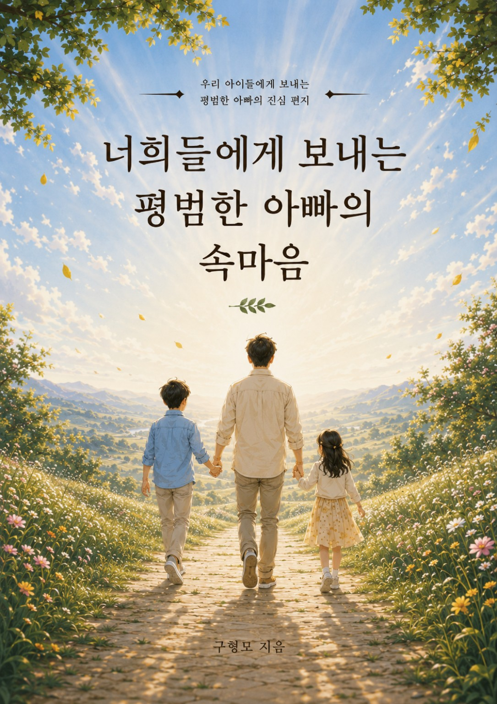

THE ALBUM · 12 TRACKS
오늘의 노래

LYRICS
노래 속 이야기
가사를 확인하며 들어보세요. 가사별 시간 싱크는 추후 설정할 수 있어요.
ALL TRACKS
열두 곡의 이야기
YOUR UNTOLD STORY
평범한 당신의 속마음
누군가의 평범한 이야기가 당신의 마음에 닿았다면, 이번에는 당신의 이야기를 들려주세요.

THE ALBUM · 12 TRACKS
LYRICS
가사를 확인하며 들어보세요. 가사별 시간 싱크는 추후 설정할 수 있어요.
ALL TRACKS
YOUR UNTOLD STORY
누군가의 평범한 이야기가 당신의 마음에 닿았다면, 이번에는 당신의 이야기를 들려주세요.